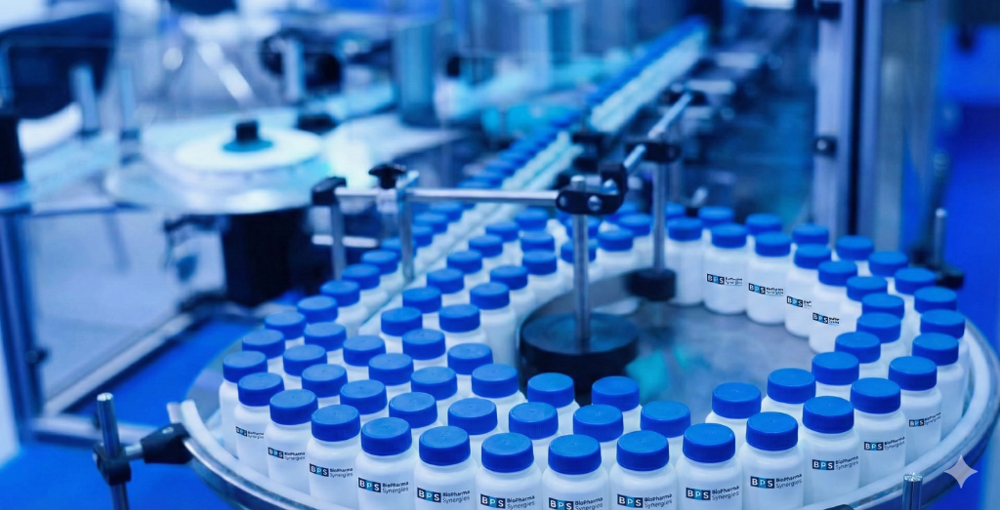
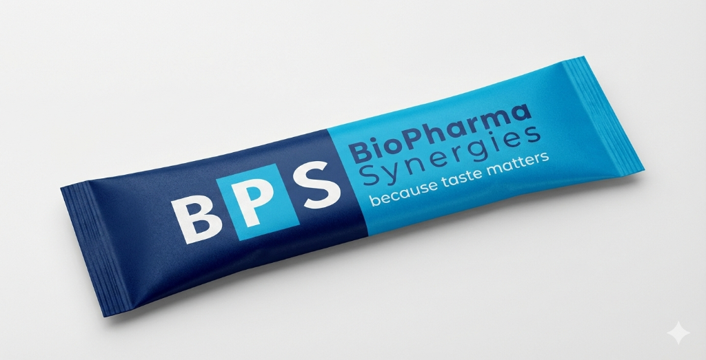
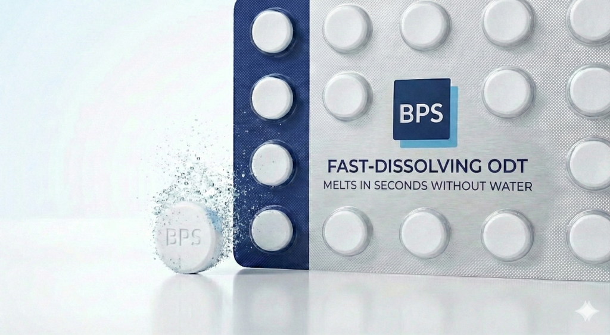
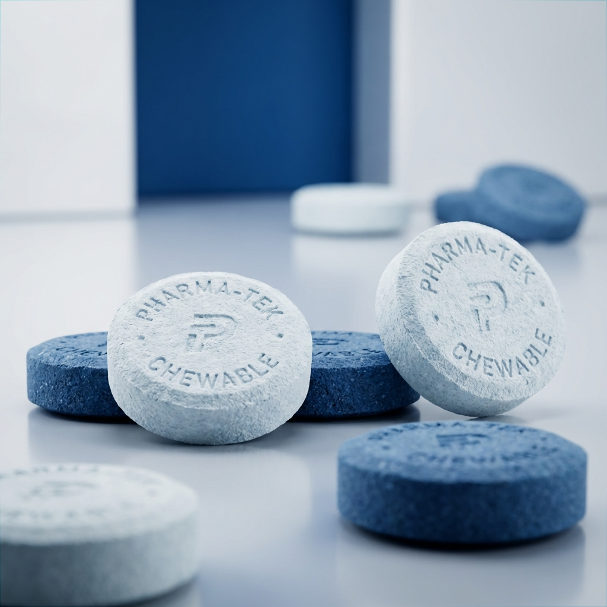

Orodispersible Formulation Development & Delivery Systems
Engineered for seamless GMP tech transfer. Develop direct-to-mouth Stick Pack powders, direct-compression ODTs, and soft-textured chewable tablets using standard blending lines.
Discuss Your Formulation Project
Protected Solid Oral Dosage Formats
Each format is tailored to the API dose load, target patient demographic, and regulatory bioequivalence strategy.

Orodispersible Stick Pack Powder
High-load capacity (up to 1000 mg API) direct-to-mouth powder that disperses in saliva in <15–30 seconds without water. Ideal for analgesics, antihistamines, and pediatric/geriatric dosing.

Orodispersible Tablets (ODT)
Manufactured via standard direct compression without lyophilization. Rapid oral disintegration with smooth mouthfeel (particle size <200 µm) and robust friability for standard blister packaging.

Taste-Masked Chewable Tablets
Soft-textured chewable matrices engineered to prevent bitter release during mastication, supporting high-dose pharmaceutical and nutraceutical active ingredients.
Rheological Excellence & −30% Manufacturing Cost
By replacing wet granulation, spray-drying, and hot-melt extrusion with ambient-temperature direct mixing, BPS formulations protect thermolabile APIs and reduce total production costs by ~30%.
Optimal Powder Flowability
Formulations achieve a Hausner Ratio of 1.04–1.14 and a Compressibility Index of 9–12%, guaranteeing weight uniformity on high-speed stick-pack filling and rotary tableting lines.
Zero Thermal or Aqueous Stress
Ambient-temperature dry blending eliminates hydrolysis and thermal degradation impurities—preserving shelf-life stability for moisture- and heat-sensitive molecules.
Standard GMP Equipment
Immediate technology transfer using conventional V-blenders, bin blenders, and standard dosing lines with zero specialized CapEx investment.